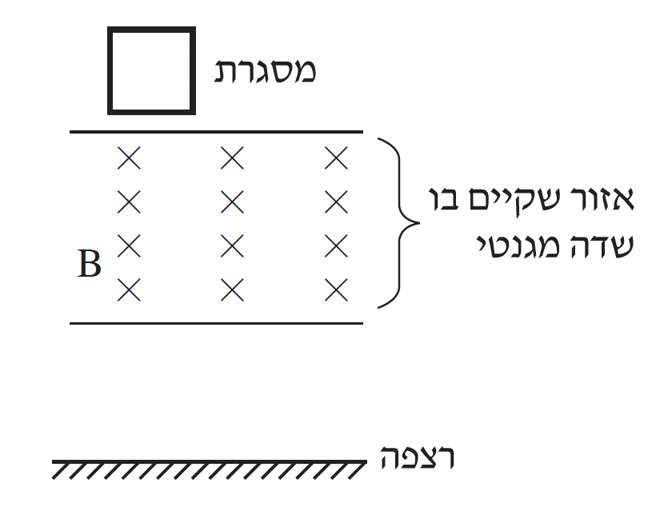

שאלה 4
לצורך ניסוי, קבוצת תלמידים שיחררה ממנוחה מסגרת ריבועית העשויה מתיל מוליך.
בעת נפילתה, המסגרת חולפת דרך אזור שבו מצוי שדה מגנטי שכיוונו אל תוך הדף (ראו איור).
שימו לב: השדה אינו פועל עד הרצפה.
המסגרת נפלה בצורה אנכית ולא הסתובבה באוויר, עד שהגיעה לרצפה.

אפשר לחלק את תנועת המסגרת לשלושה שלבים:
מתחילת כניסתה לתוך השדה המגנטי עד שכולה בתוכו.
כאשר המסגרת נמצאת כולה בתוך השדה ונעה בתוכו.
מרגע שהמסגרת מתחילה לצאת מהשדה עד שהיא יוצאת ממנו לגמרי.
במהלך כל אחד מהשלבים i-iii ציינו את הכוחות הפועלים על המסגרת, וקבעו אם הכוח השקול הפועל עליה גדל, קטן או לא משתנה. נמקו את קביעותיכם.
(12 נקודות)
לכל אחד מהשלבים i-iii:
קבעו אם זורם זרם דרך המסגרת, ואם כן - מהו כיוון הזרם (בכיוון השעון או נגד כיוון השעון);
אם לא זורם זרם - הסבירו מדוע.
(9 נקודות)
נתון: מסת המסגרת m = 0.1 kg, אורך צלעה x = 0.5 m, התנגדותה R = 1Ω.
עוצמת השדה המגנטי B = 0.5 T.
ברגע מסוים בזמן הנפילה של המסגרת, התאוצה שלה התאפסה (a = 0).
חשבו את עוצמת הזרם הזורם במסגרת ברגע זה, וציינו את כיוונו.
(7 נקודות)
חשבו את מהירות התנועה של המסגרת ברגע זה.
(5 1/3 נקודות)